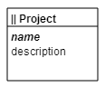

A simple Web app in Dart with a model that has only one concept - Project. Both attributes are of String type.
 The model is designed with the Model Concepts tool. The model code is generated by the dartling framework. The app code, one of examples in the dartling_examples project, is maintained at GitHub.